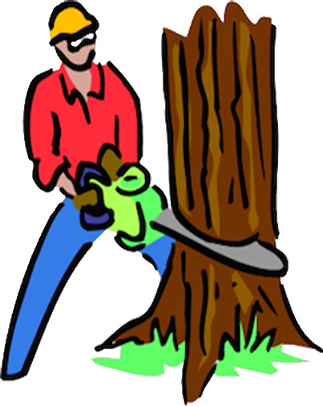
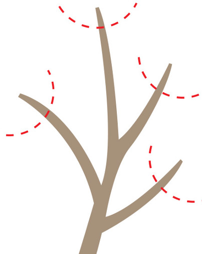

Complete
Tree
Service
Beaver Brook Tree Service is a professional, licensed and insured full service tree company providing tree maintenance and management solutions for all your tree needs. We take pride in providing all of our customers with prompt and reliable, quality service at an affordable price.
Serving Ridgefield, New Fairfield, Redding, Bethel, Brookfield, Newtown, Weston, Danbury, Wilton, Westport, and surrounding areas.
Main services
Tree Removal
When a tree needs to be removed our specialized training, experience and equipment can remove a tree safely, while minimizing damage to surrounding property.
Tree Trimming & Pruning
Pruning is the most common tree maintenance procedure. Although forest trees grow quite well with only nature’s pruning, landscape trees require a higher level of care to maintain their safety and aesthetics. Pruning should be done with an understanding of how the tree responds to each cut. Improper pruning can cause damage that will last for the life of the tree, or worse, shorten the tree’s life.
Stump Grinding
Once a tree has been removed, stump grinding will further allow utilization of the area. Stump grinding is the most efficient and effective way for removing the last part of your tree.
Tree
Removal

Tree Removal can be a dangerous job and should not be tackled by someone not familiar with tree removal. Beaver Brook Tree Service specializes in tree removals from your residential or commercial property and we are experienced in all sizes of trees. No two tree removals are the same so our tree experts will inspect the jobsite for hazards, determine how much rigging equipment will be required and if crane assistance is needed. The trees stability, age and proximity to structures and whether it's near any electrical lines are all considerations that need to be taken into account when analyzing a tree removal. Beaver Brook has experience in tree cutting when a tree is close to a structure or in an area that is difficult to reach. We will talk with you about the safest method for removing your tree and give you a free written estimate for the cost of the tree removal on your property.
If you have a large dead tree or large tree limbs that need to be removed we specialize in those kind of removals. In the event of a removal, our skilled climbers have all of the necessary equipment to ensure that your removal is done safely and without property damage. We will ensure that your property is left clean upon completion of the job. We handle the haul away of the debris from the tree removal and if you'd like we can leave the wood for you to split. For your convenience, budget and consideration, Beaver Brook Tree Service will give you several options for your tree removal needs.
- Fully Licensed & Insured Tree Removal Company
- Trained Climbers with many years of experience in removing large trees
- Professional Climbers experienced in working with crane operators for large tree removals
- Our Company is known for using safe measures to protect your home and surroundings when removing a tree
Stump
Griding
Stump Grinding is simply the most effective way to remove tree stumps. Grinding those stumps below your existing grade allows for effective repair and replanting of the area.
Beaver Brook Tree Service provides tree and stump removal for any size tree. We can remove your stump at the time of your tree removal, or you can call us at a later date for stump removal. Using top of the line equipment we can remove any stump from anywhere on your residential or commercial property.
With a variety of machines that are made for stump grinding effectively, we can handle even the most stubborn stumps. If you have an extremely large sized stump or one that is located on a hill or a stump that is in a narrow opening we will handle it. We can leave the wood chips piled up from the tree stump for you to re-use as mulch, or haul them away.
Beaver Brook Tree Service will work with you to understand your long and short term plans for the area and will give you recommended options. Our customers intention for the new yard opening where the stump is removed will determine the specifications regarding how the stump will be removed. This will include how wide and deep to grind the tree stump roots. If a customer intends to re-plant another tree then the tree stump roots will need to be completely removed.
Tree
Trimming &
Pruning

Tree Trimming & Pruning is important to maintain the health of your trees. Tree trimming is an essential part of tree care, not only to enhance and maintain the appearance of your trees, but also to promote the health and longevity of your trees. By performing regular tree trimming you help maintain the integrity of the tree and promote the life of the tree as well as decrease the potential storm damage caused by severe storms.
Beaver Brook Tree Service will trim your trees in a way that looks natural and enhances your yards beauty. We will be happy to walk your property and discuss short and long term tree pruning programs.
Why should you have your trees trimmed?
- Tree Trimming helps improve the trees strength so that branches grow strong and will be able to withstand high winds and major storms.
- Tree trimming is helpful if you have a new or young tree as it helps in the future structural integrity of the tree.
- Removal of dead or diseased limbs is important as they can pose a threat to you or your property. Proper tree trimming helps rid trees of unhealthy limbs and branches, which helps eliminate parasites and keeps your trees growing healthy.
- If you have grass in your yard that needs to have more sunshine then we can help with pruning your trees in a way that will let more light shine on your grass.
testimonials
Sarah black
I highly recommend Beaver Brook Tree Service. I called with an emergency tree removal and they were there within the hour. My fears were put to rest as the very next day the tree was cut down and taken away.
I can't thank them enough and will definitely use the service again!
Linda Mayers
I was badly in need of a tree service when I contacted this company and I received a prompt and courteous response. The job was done in a timely manner.
Not only did he do a meticulous job in trimming the tree, but when he left the entire area was spotless. I highly recommend this company for anyone who wants a great job at a good value.
lora smith
The service and friendliness of Beaver Brook was excellent. Clayton worked with me during a description of what I was looking for, made suggestions, and quickly was able to get the job done right.
I was impressed most of all with how I was consulted with each step, to ensure that I was satisfied and the yard looking great. Thanks again!
24 Hour
Emergency
Service
Day or night, we remove dangerous trees in hazardous conditions.